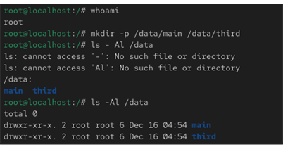
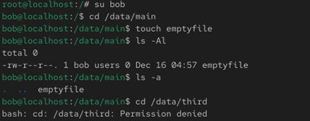
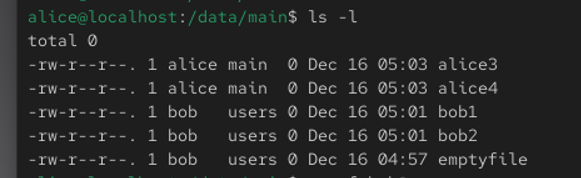
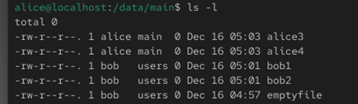
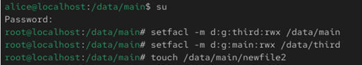
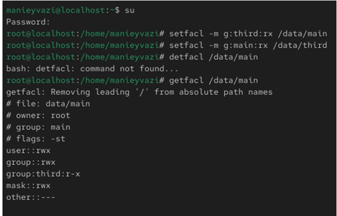
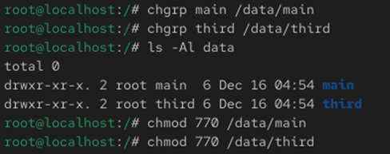
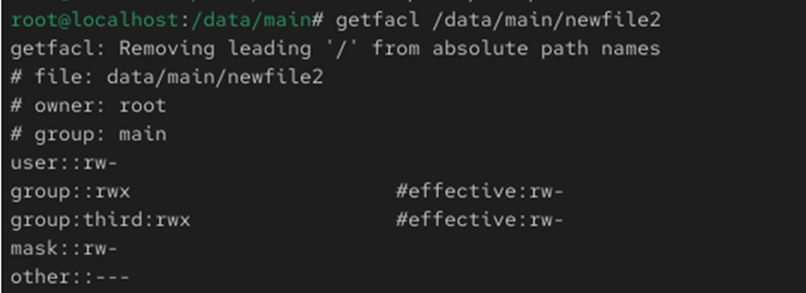

Получение практических навыков настройки базовых, специальных и
расширенных прав доступа
для пользователей и групп в операционной системе Linux.

Рис. 1 — Создание каталогов /data/main и /data/third
-.

Рис. 2 — Работа пользователя bob

Рис. 3 — Удаление файлов без sticky bit
-.
Рис. 4 — Установка специальных битов
-.

Рис. 5 — Проверка ACL
-.

Рис. 6 — Права newfile1
-.

Рис. 7 — Наследование ACL
-.

Рис. 8 — H
.

Рис. 9 — Проверка работы системы
В ходе работы были изучены базовые, специальные и расширенные
механизмы управления правами доступа в Linux.
Полученные навыки позволяют гибко настраивать доступ пользователей и
групп к файлам и каталогам
в многопользовательской системе.